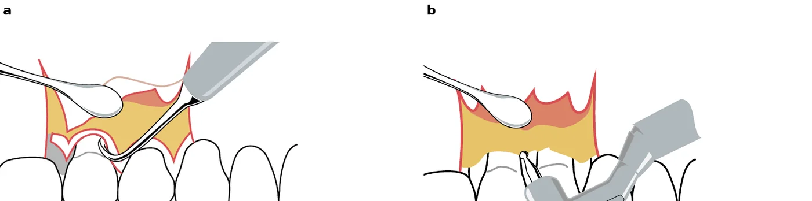

نسخه استخراجشده؛ ترجمه یا تأیید علمی انجام نشده است. وضعیت: captured
این تکنیک با یک ایدهی روشن معرفی شد:

🔑 هدف، فقط دسترسی برای دبریدمان کامل است — نه حذف پاکت، نه جابهجایی فلپ، و نه برداشتن حداکثری بافت.
حفظ حداکثر بافت ⬅️ نتیجه زیبایی بهتر، تحلیل کمتر، حساسیت کمتر.
ایجاد ترمیم اولیه با نزدیک کردن دقیق لبهها ⬅️ بهبود سریعتر و راحتی بیمار.
پذیرش این واقعیت که عمق پاکت بهتنهایی معیار موفقیت نیست؛ کاهش التهاب و پایداری CAL مهمتر است.
| برش | ویژگی کلیدی |
|---|---|
| ۱. داخل شیاری | 🔑 در فاصله حداکثر ۱ میلیمتر از مارجین لثه (یا از خود شیار) — بسیار محافظهکارانه، موازی محور طولی دندان و به سمت ستیغ |
| ۲. شیاری | از کف شیار تا ستیغ استخوان |
| ۳. بیندندانی | افقی، برای برداشتن یقه بافتی |
⚠️ تفاوت کلیدی با فلپ حذف پاکت: در ویدمن اصلاحشده، برش نخست بسیار نزدیک به مارجین است تا بافت حداکثری حفظ شود. در فلپ اپیکالی یا رزکتیو، همین برش از فاصله بیشتری زده میشود تا بافت اضافی برداشته شود.
برش داخل شیاری محافظهکارانه، فقط تا حدود ۱ میلیمتری مارجین.
بلند کردن فلپ تمامضخامت — اما فقط تا حدی که چند میلیمتر از ستیغ استخوان دیده شود.
برش شیاری و بیندندانی و برداشتن یقه بافتی.
دبریدمان دقیق سطوح ریشه با دید مستقیم — هدف اصلی کل عمل.
برداشتن بافت گرانوله.
بازگرداندن فلپ به موقعیت اولیه و بخیه برای پوشش کامل استخوان بیندندانی.
| محدودیت | دلیل |
|---|---|
| 🔴 فلپ حداقلی بلند میشود — فقط چند میلیمتر از ستیغ | بلند کردن گسترده، تحلیل استخوان پس از عمل را افزایش میدهد |
| 🔴 جراحی استخوان انجام نمیشود (یا حداقلی) | هدف حفظ بافت است، نه بازآرایی |
| 🔴 فلپ جابهجا نمیشود | بازگرداندن به موقعیت اولیه، بخشی از تعریف تکنیک است |
🔑 مهمترین هدف بخیه در این تکنیک: پوشش کامل استخوان بیندندانی و ایجاد ترمیم اولیه. اگر پس از بخیه، استخوان بیندندانی برهنه بماند، مزیت اصلی تکنیک از دست رفته است.
| ویدمن اصلاحشده | فلپ اپیکالی / رزکتیو | |
|---|---|---|
| کاهش عمق پاکت | متوسط — عمدتاً از راه بهبود چسبندگی و کاهش التهاب | بیشتر — از راه جابهجایی مکانیکی بافت |
| تحلیل لثه پس از عمل | 🟢 کمتر | 🔴 بیشتر |
| حساسیت ریشه | 🟢 کمتر | 🔴 بیشتر |
| نتیجه زیبایی | 🟢 بهتر | 🔴 بدتر |
| دسترسی به استخوان | محدود | 🟢 کامل |
| نوع بهبود | 🟢 ترمیم اولیه | وابسته به تکنیک |
پاکتهای متوسط تا عمیق که نیازمند دسترسی برای دبریدماناند.
نواحی زیبایی — قدامی فک بالا.
بیمارانی که حساسیت ریشه برایشان مسئله جدی است.
وقتی نیازی به جراحی استخوان نیست.
بهعنوان فلپ دسترسی پایه برای درمانهای بازسازی (با تغییراتی مانند حفظ پاپیلا).
نیاز به بازآرایی استخوان — دسترسی کافی نمیدهد.
نیاز به افزایش طول تاج — فلپ جابهجا نمیشود.
بزرگشدگی شدید لثه که برداشت حجیم بافت لازم دارد.
⚠️ اشتباه رایج ۱: هدف ویدمن اصلاحشده فقط دسترسی است، نه حذف پاکت.
⚠️ اشتباه رایج ۲: برش داخل شیاری در حداکثر ۱ میلیمتری مارجین — بسیار محافظهکارانه.
⚠️ اشتباه رایج ۳: فلپ بازگردانده میشود و استخوان بیندندانی باید کاملاً پوشیده شود.